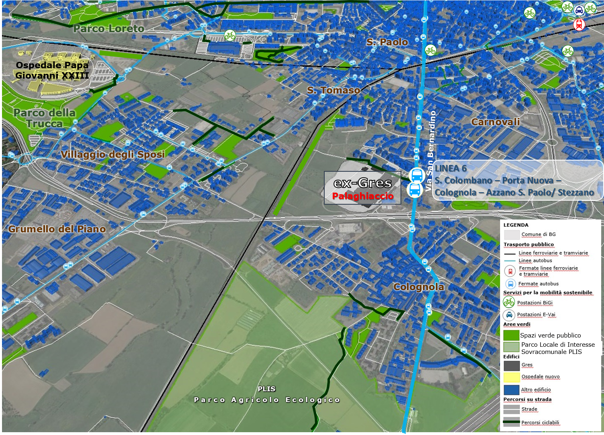

| Mobilità pubblica e green |
|  L'analisi della mobilità pubblica e green della periferia sud-occidentale di Bergamo |
Analizzando il sistema di mobilità pubblica nell’area
dell’ex-Gres, si rileva che via
San Bernardino, l’asse viario principale che passa a est dell’insediamento
industriale, è percorsa dalla linea ATB n. 6, l’unico mezzo per raggiungere
l’area utilizzando il trasporto pubblico. Esiste una seconda linea di autobus che
passa oltre la ferrovia verso ovest, ma questa soluzione richiede di percorrere
un lungo tratto a piedi. Per quanto riguarda la mobilità green, nella zona sono presenti brevi e discontinui tratti di pista ciclabile, che per tale intermittenza, sono poco utilizzati. Non sono presenti, inoltre, postazioni di bike sharing nelle vicinanze, in quanto tale servizio si concentra quasi esclusivamente concentrate nel centro città. |